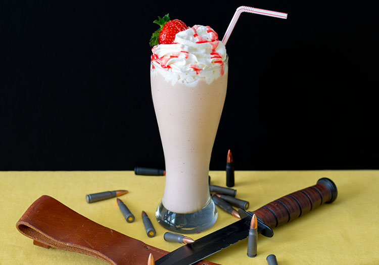

WOLFENSTEIN II: STRAWBERRY MILKSHAKE

The strawberry milkshake. An iconic, wholesome treat. And, apparently, the “favorite American thing” for one particular Nazi Kommandant, who stops into "Wolfenstein 2's The New Colossus" Roswell, New Mexico, diner to enjoy this scrumptious refreshment.
Ingredients
- 700 g vanilla ice cream
- 2 cups (340 g) strawberries, tops removed and chopped
- 1 (100 g) banana
- ¼ cup heavy cream
- 3 tbsp balsamic vinegar
- 1 tsp salt
- 2 ½ tbsp brown sugar
Instructions
- Combine the balsamic vinegar, salt, and brown sugar in a saucepan over medium-high heat. Heat until the sugar dissolves. Set aside and allow to fully cool.
- In a blender, add the strawberries and banana and blend until smooth.
- Add the balsamic sugar mixture and blend.
- Add the ice cream and heavy cream. Serve in a cup and top with whipped cream.
Note
- If the milkshake is too thick, add additional heavy cream.